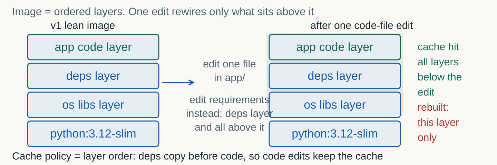
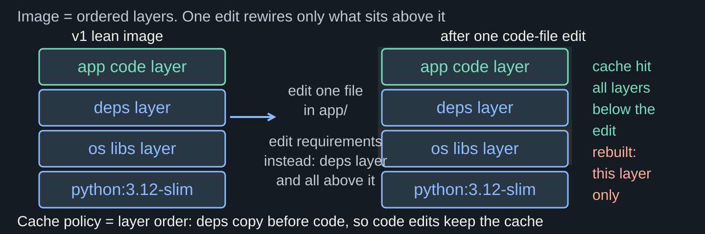
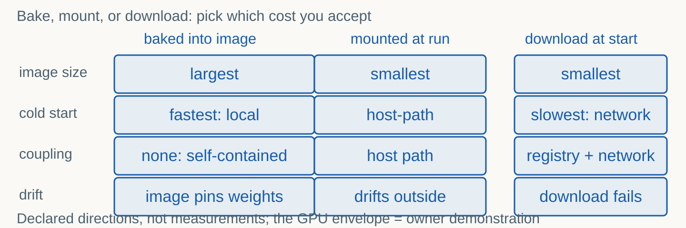
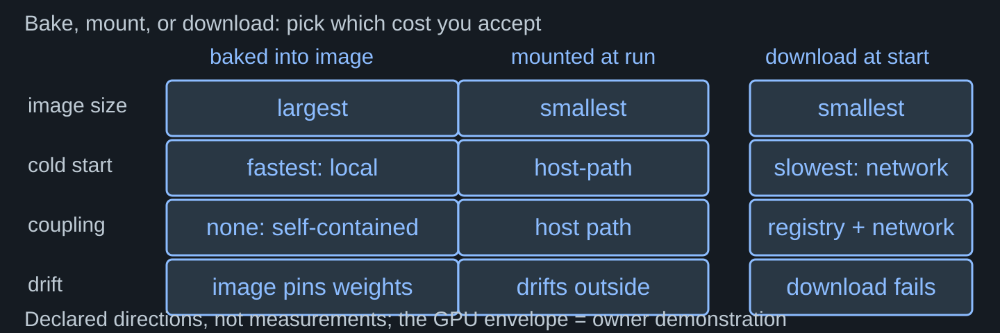
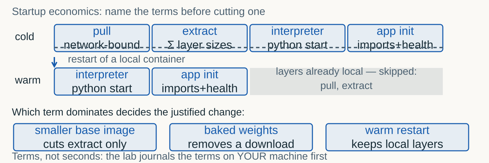
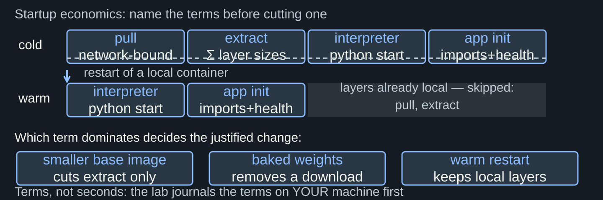

Images as ordered layers, lean multi-stage builds, the probe suite across the boundary, honest startup economics.
The Topic 08 gateway validates, queues with honest 429s, maps errors, cancels. But it lived on whatever Python and pip state the host had.
The app becomes an immutable image with pinned dependencies. An image is a layered blueprint; a container is an ordinary process on your machine running that blueprint in isolation — same kernel, no virtual machine.
Host A: Python 3.10, old fastapi. Host B: 3.12, fresh install. Host C: a stale venv. Same code, three different services — maybe three different bugs.
"It worked yesterday" is not reproducibility. A floating latest tag is a deferred dependency break. A base image tag is not a version.


| You edit | What rebuilds | Why |
|---|---|---|
| A file in the app code | Only the top layer | Nothing below changed |
| app/requirements.txt | The pip layer and everything above | The dependency COPY sees new content |
| The base image tag | The whole stack | The foundation changed — no cache above it |
Layer k is reused only if layers 1..k are all unchanged. A stack is only as cacheable as its most frequently edited layer.
Order instructions from least to most frequently changing: system packages, then dependency files, then code. The order IS the cache policy.
Compilers and pip cache stay in the builder stage; the runtime stage copies only the installed artifacts and code. The image ships none of the build machinery.
A .dockerignore keeps journals, virtualenvs and VCS state out of the build context. What the context never sees, no layer ever remembers.
| Defect in v0 | Fix in v1 | What it buys |
|---|---|---|
FROM python:3.12 (full base) | FROM python:3.12-slim | Smaller image: every pull pays less |
COPY . . before pip install | Requirements first, then code | Cache hits on everyday code edits |
| Runs as root | Dedicated non-root user | Smaller attack surface |
| No health declaration | HEALTHCHECK on /health | The daemon knows the service lives |
Ports are mapped (-p host:container), configuration travels in env (-e), memory arrives as a wall (--memory).
Health, one completion, then an overload burst. The Topic 08 suite must pass UNCHANGED against localhost:mapped-port — that is the point of the contract.
| Probe | Expected | What it proves |
|---|---|---|
| GET /health | 200 with queue occupancy | The service lives; the daemon can see it |
| POST one completion | 200 with a mock completion | The main route survives the boundary |
| 16 concurrent completions | Some 200s plus 429 with Retry-After | The bounded queue is honest under load |
A GPU workload = CUDA base image + pinned torch/vLLM stack + --gpus at run time + a driver-to-CUDA compatibility matrix.
The course owner demonstrates the production variant and retains the evidence. Students ship the CPU mock — it builds and answers anywhere Docker runs.


| Axis | Baked | Mounted | Downloaded |
|---|---|---|---|
| Image size | Largest | Smallest | Smallest |
| Cold start | Fastest | Host-path dependent | Slowest, network each boot |
| Coupling | None | Host filesystem | Registry plus network |
| Drift risk | Image pins the weights | Artifact lives outside the image | Download can fail or change |


Cold: remove, create and start the container, watch /health. Warm: stop and start the same container. Both journaled with progress bars on YOUR machine.
The v0-to-v1 delta is claimed only with a named mechanism: smaller base means shorter extract; fewer packages mean faster interpreter and init.
A dedicated user inside the container; base and dependencies pinned by tag, ideally by digest. A tag is not a version; a digest is.
A secret added in one instruction and deleted in the next still lives in the earlier layer. History reads what you erased.
| Drill | What you do | What you see |
|---|---|---|
| Tag drift | Pull a tag that does not exist | Exit code 1 and a manifest-unknown answer from the daemon |
| Memory-limit OOM | Run with <code>--memory 64m</code> and a memory-hog loop | Exit code 137: the kernel SIGKILLed the process |
137 = 128 + 9 (SIGKILL), the classic cgroup OOM. 1 = the command failed, read the tail. 125 = the daemon itself refused. 127 = command not found.
Cause, evidence, fix — three fields per drill, journaled. "It crashed" is not a diagnosis; "exit 137 under a 64 MB wall" is.
CPU and memory limits turn best-effort sharing into a contract: exceed the wall and the kernel kills — no Python exception, no traceback, just the exit code.
The bounded queue answered 429 in user space; the cgroup wall answers SIGKILL in kernel space. Honest refusal beats silent degradation at both layers.
| Block | You do | It is done when |
|---|---|---|
| 0 Predict | Freeze layer order and cache predictions | build-plan.json exists before any build |
| 1 Build | Raise v0, then write the lean v1 yourself | v1 builds; every layer justified |
| 2 Probe | Run, limit, and probe across the boundary | The T08 suite passes unchanged |
| 3 Measure | Layer sizes, cold and warm startup, one improvement | Delta attributed to a named mechanism |
| 4 Drills | Tag drift and OOM, cause-evidence-fix | Both records in the journal |
| Stretch | SBOM plus three supply-chain risks | Inventory saved; risks written |
A software bill of materials: every OS and Python package in the image, with versions. One image, one inventory, generated by a plugin or scout command.
Floating base tags; dependencies without exact versions; files that were "deleted" but still live in layer history. Three risks, three sentences.
| Risk | What floats | The pin |
|---|---|---|
| Base image | A tag can change bytes under your feet | Pin the tag, ideally the digest |
| Dependencies | Ranges reinstall different worlds per build | Exact versions in a lockfile |
| Layer history | "Deleted" files stay in earlier layers | No secrets in any instruction, ever |
Identical behavior everywhere is the precondition for everything that follows: scaling, orchestration, rollback. The unit of deployment is immutable.
Topic 10 scales engines across GPUs. None of it works if the thing being scheduled can drift. Your image is the unit those topics multiply.
Predict before you build. Keep the lean stack. Probe across the boundary.
Measure the startup. Diagnose the failures. Journal everything.